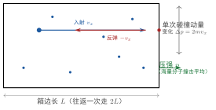

理想气体的压强公式
一句话定义
压强公式 把宏观可测的压强，用微观分子数密度与平均平动动能表达，揭示压强的分子碰撞成因。
定性
先把”压强从哪来”看个清楚。
我们习惯把压强想成”气体被压缩得紧、挤在一起往外顶”，好像有一种静力在推器壁。但那是宏观错觉。真实的微观画面是：容器里的分子像个不停开火的小机枪，一秒钟几亿次地撞向器壁，每撞一次就给器壁一个大小方向都随机的”冲量”——一下推一下、方向乱变。可因为分子数多得吓人，这些零散的、随机的撞击在单位面积上平均起来，就形成了一个稳定、持续、方向恒定的”推力”——这就是我们仪表上读到的压强。
所以压强不是”积压的力”，而是”疯狂撞击的平均推”。这一点是理解压强公式的钥匙：单次撞击微不足道、完全随机，可 次连续撞击叠加后，平均力却精确得可怕。
它在体系里的位置：压强公式是气体动理论第一次把宏观量与微观量搭桥。左边 是温度计旁边的压力表能读的宏观量，右边 、、 全是分子的微观量——你眼睛看不见、量体温表测不到。这条公式说明：气体内在的运动（微观）和它对外呈现的推力（宏观）是同一件事的两面。
反直觉的点：压强公式里是 ——速度平方的平均，不是平均速度的平方，更不是”平均速率”。 这三个是不同的量，长得很像却差之千里。之所以用速度平方，是因为碰撞的动量传递与速度的一次方成正比，而我们要平均的是”速度平方”这一力学量，所以必须老老实实算 ，不能偷懒用 凑。

图：分子沿方向以速度 撞向器壁，弹性碰撞后以 返回，单次动量变化 ；海量分子连续撞击平均成压强。
数学表达
压强公式的标准形式：
各符号： 是压强（）， 是分子数密度（单位体积分子数，）， 是单个分子质量（）， 是分子速率的平方平均（）。
它有两条常用等价写法：
- 是气体质量密度，故 用密度写，工程更顺手；
- 是分子的平均平动动能，故 用动能写，物理意义更直白：压强 ∝ 分子数密度 × 平均平动动能。
读这个公式的结构，三大要素一目了然： 是”撞得多不多”， 是”撞得猛不猛”（）， 是”三方向均分”。压强正是”单位体积里有多少分子”与”每个分子平均多能撞”的乘积再乘上方向因子 。无关的强弱、无关的种类，全被这两个量概括——这正是它”一以贯之”的地方。
注意符号辨析： 是平方平均（先平方再平均）， 是平均的平方（先平均再平方），前者恒不小于后者（柯西不等式），二者不可互换。
关键性质
-
压强 ∝ 分子数密度 。 分子越密，单位面积单位时间撞壁的分子越多，压强越大。为什么： 增大直接使碰撞频率上升， 随之增大。这解释为何压缩气体（ 缩小、 增大）压强上升。
-
压强 ∝ 平均平动动能 。 分子平均越”猛”，每次撞击越有力，压强越大。为什么：动量传递 与速度成正比，平均动能 ，动能越大撞击越狠。这解释为何加热气体（ 上升）压强上升。
-
是三方向均分因子。 压强公式里的 不是任意常数，而是来自分子运动各向同性：三个方向 的平方平均相等，各贡献总动量的 。为什么：等几率假定要求分子无任何方向偏好，故 。这个 若被算错，多半是把”方向均衡”误解成了”时间分数”。
-
分子间碰撞不影响压强大小。 分子之间也会互撞，但弹性碰撞只重新分配速度，不改变全体分子的平均动能与数密度，所以压强的统计结果不受影响。为什么：理想气体模型里碰撞守恒能量，系统在平衡态的总平动动能稳定，压强只由 和 决定，与碰撞微观路径无关。
-
压强是统计平均，不是瞬时值。 单看一瞬间，撞壁分子数波动剧烈；只有取时间平均和空间平均，压强才稳定。为什么：这正是统计规律的体现—— 和 都是海量分子的平均量，平均后涨落小到可忽略， 才成为确定值。
推导
现在把压强公式完整推出来——不是背 ，而是看清它是从”一次碰撞、一个动量”一步步长出来的。
先抛问题：一个分子撞一次壁，给器壁多大”冲击”？亿万个这样的冲击合起来，怎么变成稳定的压强？这个 从哪里冒出来？
设物理场景。取一体积 的立方容器，内有 个理想气体分子，分子质量均为 。任取一个分子，速度 的三个分量为 。容器已达平衡态，分子无方向偏好（各向同性）。先盯住垂直于 轴的那块器壁（例如 的面）。
列依据。三条事实：一是碰撞为完全弹性；二是理想气体分子间除碰撞瞬间无相互作用（碰撞前后受力可忽略，分子撞壁前近似匀速直线）；三是分子间碰撞不影响宏观统计结果（弹性、守恒能量）。此外用绝对速度的平方关系 。
逐步演绎。第一步，算单次碰撞的动量变化。分子以 撞向 面，弹性碰撞后 方向速度反号、成为 （ 不变），故一次碰撞分子动量改变量大小为
这 的冲量，由器壁给分子；反过来分子也给器壁一个等大反向的冲量 。这是”一次撞击有多猛”。
第二步，算这个分子单位时间撞多少次。分子在 方向一来一往，往返一次走过距离 ，所需时间 。所以它单位时间撞该壁的次数是 。
第三步，算这个分子对该壁的平均作用力。力 = 单位时间的动量改变，即每次冲量乘单位时间次数：
每个分子都贡献一份 。把 个分子全加起来，再除以壁面积 ，得压强：
这里用到了 和 。
第四步，用各向同性把 换成 。因为分子运动无方向偏好，三个方向平方平均相等。又 ，故
回头看。结论水到渠成：压强公式不是凭空来的，而是”一次撞壁传递 冲量 → 单位时间撞 次 → 单分子施力 → 全体求和除以面积 → 用各向同性引出 “这条逻辑链的必然产物。那个神秘的 正是”三方向均分”的直接体现； 则把”数密度、分子质量、速度平方平均”三个微观要素收成一个宏观压强。整个过程只用了弹性碰撞、动量定理和统计平均，没有半步玄学。
为什么重要
压强公式是气体动理论第一次的宏观—微观对账。它的地位与后果：
- 揭开压强的成因：彻底打破”压强是积压的静力”的直觉，确立”压强是分子撞击的平均”这一微观本质，把宏观力和微观运动连接起来。
- 奠定温度来源：与温度公式（）联立，就能由压强与体积推出温度，进而把物态方程重新”微观地”推一遍——这是气体动理论从微观第一性再造宏观规律的关键一环。
- 解释大量现象：压缩升温、加热增压、为何气体密度升则压强升，全都能从 一句话说清。
工程动机：高速容器、气体管道、发动机气缸的应力与强度设计，最终都回归到”压强有多大”；而压强本质上由 与分子动能决定，故只要控住密度与温度，就控住了压强。不掌握压强公式，就无法把”温度/密度怎样影响应力”讲透。
适用条件
压强公式的前提就是它推导所处的整条假设链：
- 理想气体：分子视为质点、无相互作用（除碰撞）、碰撞弹性。这是”单分子匀速、碰撞只换向、统计不受分子间碰撞影响”的根基。
- 平衡态、各向同性：分子无方向偏好， 才成立。若气体处强流场、各向异性的非平衡态，该式失效。
- 大量分子（ 越大越好）：压强是统计平均， 海量、涨落可忽略才稳定。分子数太少（微尺度），压强涨落大，公式失去”确定值”意义。
- 分子间碰撞不改变统计结果：理想气体弹性碰撞守恒能量、不改变 与 。
边界要说清：压强公式是理想化的第一性近似，真实气体、非平衡、微观少量都会偏离。真实边界：稠密气体（分子间作用力显现）、高速湍流、极低压高稀薄（失去”大量碰撞平均”）、临界态附近， 都不再精确。
边界与误区
-
误区一：把压强当成分子”挤在一起”的静力。 根因：宏观上”气越足越顶手”，让人以为有某种积压的力。正确区别：压强是分子不停撞击的平均冲量，是一种动力学效应，不是静态的”挤压”。分子并不”贴壁推”，而是靠反复撞壁产生作用。
-
误区二：把 理解成”分子有 时间在撞壁”。 根因：看到 就联想成某个时间或次数比例。正确区别： 来自三方向均分——分子运动在各方向概率相等，故 方向贡献总动能的三分之一。它描述的是一种”方向均衡”，与”撞壁时间占比”无关。
-
误区三：把 与 混用。 根因：都带一个”平均”，字母几乎一样。正确区别： 是平方平均（先平方再平均，力学量动能相关）， 是平均速率（先平均再平方）。前者参与力学计算，后者与动力学无关。用错则数值、量纲都对不上。
-
误区四：以为分子间碰撞会”损耗”导致压强随时间降低。 根因：但凡想到分子一直在撞，就觉得能量会慢慢耗尽。正确区别：理想气体的碰撞是弹性的，平均动能守恒；碰撞只是让分子间交换速度，不改变整体 ，因此平衡态下压强恒定、不衰减。
对照
最容易和压强公式混的是温度公式（）。两者都源于分子平均动能，只用一个关键差异区分：
压强依赖”密度 + 平均动能”，温度只依赖”平均动能”。
压强公式 含 （数密度）——加压靠”分子变密”或”分子变猛”都行；温度公式 不含 ——温度只由分子平均平动动能决定，与密度无关。同样温度的两罐气，一罐稠、一罐稀，温度相同但压强不同（稠的压强更高）。一句话记忆：温度度量”分子多猛”，压强度量”分子多猛 × 分子多密”。
例子
我们把压强公式真正算一次，验证它能不能给出真实的”一标准大气压”。
常温常压（，）下的空气，可近似看作理想气体。取空气一个分子的平均质量（以氮、氧为主）约 。先由物态方程（或 ）求分子数密度：
即在每立方米空气里约有 个分子。由压强公式反解分子速率平方平均：
开方得根均方速率
室温下空气分子平均以每秒约 500 米的速度乱飞——比音速还快。现在验证压强公式的自洽性：把 … 直接代入 ，恰好吻合。
反推工程含义：这个结果告诉我们，容器壁时时刻刻在承受世界级”轰炸”——每平方厘米每秒约有 次分子撞击，但每次冲量小到足以让壁毫无感觉。压强宏观上”轻轻一顶”，微观上却是天文数字的撞击叠加。 这也解释了为何高压容器要用厚壁钢材——提高密度（加压）就是让海量撞击更密集，平均推力随之飙升。